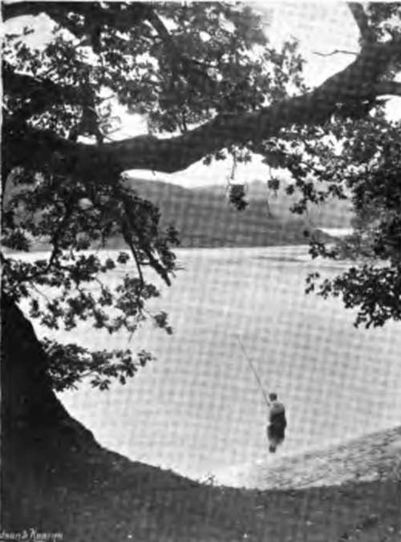
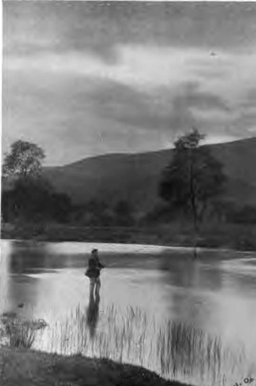

Fishery Laws. Part 7
Description
This section is from the book "Fishing", by Horace G. Hutchinson. Also available from Amazon: Fishing.
Fishery Laws. Part 7
Another rule of the Scotch law of great practical importance is that to use any new or unusual mode of catching fish is illegal. It is not illegal to use net and coble so constantly as practically to intercept all the fish, but to introduce some new mode, such as hang nets, although possibly far less destructive, would be illegal. It is on this principle that the Scotch law prevents the setting up of new fixed engines in tidal and non-tidal waters. But this rule does not exclude the use of improvements in old modes of fishing; this was settled in the celebrated Bermoney boat case, which held that a new mode of working net and coble fisheries, which had been introduced on the Tay, was legal.
The Scotch rule as to access to the river for salmon fishing differs from that in England. This also follows the idea of the salmon being a royal fish, and the right to fish is derived from a royal grant, so that the Crown also gave as an incident the right to the free use of the grant, and therefore access to the river on both banks, as an accessory to the right of Sainton fishing other than rod fishing. In England no such right would exist, as the reason for it docs not apply to English law. This right does not apply as a rule of law to angling, as that is a right not necessarily derived from the Crown, but from the owners of the land.
109.- Pool Below The Old Oak
170.- The Minutes After Sunset.
Another distinction between the English and Scotch law is that of close time; except as to salmon, there is no close time in Scotland.
The method of administering the law in Scotland differs considerably from England. The Scotch Fishery Board have there control of matters. Every river in Scotland which flows into the sea and its tributaries forms a district, and the Fishery Board fixes the close time for fishing in it. The close time for all modes of fishing but angling must be 168 days; but the Board can fix when they shall begin and end. They also fix the angling close time, but it must not begin earlier nor end later than the other close time. Weekly close time in Scotland has this important difference to England. It is in England and on the Tweed no offence to angle on Sunday; in Scotland it is illegal to angle on the Sabbath.
Each district has a local Board whose chief duties are to carry out the by-laws and orders of the Central Board, and to see to the protection of the river. The mode they raise their funds is quite different from England. A roll of the proprietors of the fisheries in the district is made up on which the value of each fishery is entered, and a rate to raise the necessary sum is levied on the proprietors.
The powers of the Board as to dealing with poachers are in some respect more, and in some less stringent than in England. The differences are mostly very technical, and it would involve too much space to set them out at length. One, however, may be noticed. In England if a person fishes without the express leave of the owner, and obtains it afterwards, no conviction would follow. The Scotch rule is that the express permission must be clearly proved to have been given beforehand, as no subsequent ratification or sanction will do away with the fact of the illegality of the fishing, and a conviction should follow unless it is proved.
As to fish other than salmon, the Scotch law prohibits, under a penalty, a number of modes of taking fish in the main the same as those prohibited in England; but the section goes on to say that the riparian owner and any one authorised by him may in his own fishery exercise the right of fishing in any mode not prohibited by law before the Act of 1860 (23 and 24 Vict. c. 45). It would therefore seem that a riparian owner in Scotland can take fish other than salmon in any way he likes, except it be by weirs or by poisoning the water, these two having been illegal in 1860.
A point that has given rise to much discussion, and cannot be said even yet to be finally settled, is whether clean salmon caught by rod in close time in Scotland can be legally sold in Scotland. The importance of the point is that if the sale in Scotland is legal, the sale in England would also be so. It is rash to give any opinion on so controverted a point; but although justices probably would not, it seems most likely the High Court of Justice would, hold such sale illegal.
In Ireland the fishery law is the same as in England, except so far as it has been altered by statutes applying solely to Ireland. Of these there are a large number; and the Irish statute law as to fisheries is even more confused than the English, as there are more Acts in force. In the main provisions, however, the English and Irish laws as to salmon are very similar, mainly from the fact that the English Salmon Act of 1861 was a copy more or less slavish of the law then in force in Ireland. Ireland had already been divided into fishery districts with Boards of Conservators. The mode of election differed, the Irish Boards being mainly elected by the licensees, and not nominated by public bodies as in England. Their powers are very similar to those of the English bodies. Their funds are raised by licence duties on the instruments used, as in England, but they are supplemented by rates, which is not the case in England. There is one very important difference in the Irish and English systems. In England a rod licence only avails in the district for which it is taken out, so that a man who goes about fishing requires a number of licences. In Ireland a rod licence, wherever taken out, is available in all parts of Ireland just as a game licence. The rate to raise funds which the Fishery Boards are authorised to levy is such sum as will make up the amount from licences paid by each fishery to a sum equal to 10 per cent, of what the fishery would pay on the poor law valuation in force.
Continue to: